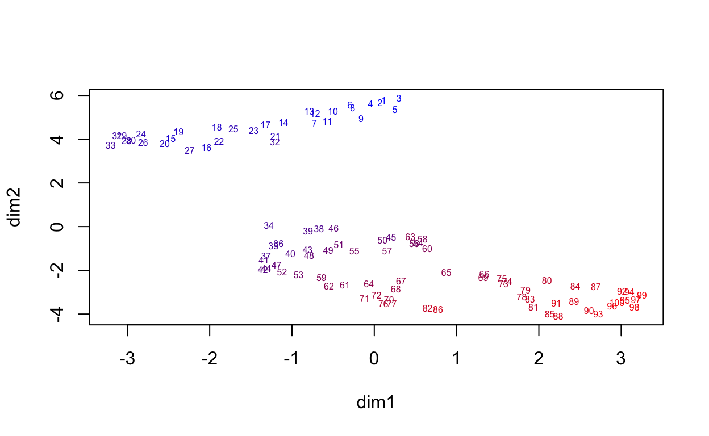

The UMAP craze in singe cell RNA-Seq
Single-cell RNA sequencing (scRNA-seq) has become one of the most widely used technologies in basic biology. With the rise of scRNA-seq, the use of UMAP has become ubiquitous in publications. While this dimensionality reduction technique is useful for exploratory data analysis, its overuse and misinterpretation have led to confusion and misleading conclusions.
High dimensional expression data has been around for decades, tSNE, UMAP’s predecessor which started the craze, was published in 2008. Isomap, tSNE’s predecessor, was published in 2000. So why has UMAP suddenly become so popular? One possible reason is that with thousands of cells being analyzed they produce visually striking figures, especially when color is added. For example, here is a UMAP of 4 million mouse brain cells from https://alleninstitute.org:

But we should not include plots in scientific papers just to make them aesthetically pleasing. Plots should communicate findings, not decorate.
What Does UMAP Actually Do?
UMAP is a non-linear dimensionality reduction techniques that maps high-dimensional data onto two or three dimensions. This is particularly useful for visualizing datasets with thousands of dimensions. For example, in scRNA-Seq we have measurements for thousands of genes for each cell.
Suppose you have \(n\) observations (cells) in \(p\)-dimensional space and want to explore if there are groups of observations that are closer than expected to each other than if the data was uniformly distributed. With two dimensions this can be done by making scatter plots and visually inspecting for clusters or other patterns:
plot(iris[,-5])Visualizing clusters or other relationships directly in high-dimensional space is challenging. A dendrogram might help, but when \(n\) is large, these become cluttered. Scatter plots are limited to two or three dimensions. UMAP attempts to address this by projecting the data into a lower-dimensional space while preserving local relationships. In particular, the algorithm encourages points that are close in the high-dimensional space to stay close in the low-dimensional space.
This is valuable for discovering the presence of discrete clusters in data. For example, applying UMAP to the handwritten digit images (MNIST) dataset tends to reveal ten clusters, corresponding to the ten digits.
mnist <- dslabs::read_mnist()
x <- mnist$test$images[1:5000,]
x <- (x[,apply(x, 2, sd) > 80] > 125) * 1
y <- as.factor(mnist$test$labels[1:5000])
d <- as.matrix(dist(x, method = "binary"))
u <- umap(d, n_neighbors = 10, min_dist = 0.025)
data.frame(dim1 = u$layout[,1], dim2 = u$layout[,2], Label = y) |>
ggplot(aes(dim1, dim2, color = Label)) +
geom_point(alpha = 0.5, cex = 0.5) The fact that it is hard, or impossible, to summarize the data into two dimensions using linear approaches and obtain this level of separation make UMAP a useful exploratory tool.
UMAP can be misinterpreted
Notice that some points in the plot above are mis-classifieds. Two dimensions are not enough to predict with high accuracy. This isn’t an issue if our goal is exploratory data analysis (EDA). However, if we over-interpret this as evidence of discrete clusters defined solely by their position in the two-dimensional scatter plot, we risk drawing incorrect conclusions.
The issue becomes more significant when the underlying mathematics of UMAP is not fully understood. UMAP takes a \(p\)-dimensional vector of numeric values, such as gene expression in scRNA-Seq, and applies a mathematical transformation to produce two values, resulting in the two coordinates shown in the plot. But what exactly is this function? Do the authors who include these plots in papers fully understand the mathematics behind it? What genes are included in the calculation and how? How exactly does distance in the two dimensional summary relate to the actual distance in \(p\)-dimensional space? The actual summary function is rarely if ever explained, leaving readers uncertain about what the plot truly represents.
Additionally, UMAP is highly sensitive and can create separations in data that shouldn’t necessarily exist. For example, consider applying UMAP to 100 randomly generated points from a multivariate normal distribution representing three correlated random variables:
Sigma <- matrix(.8, 3, 3); diag(Sigma) <- 1
x <- MASS::mvrnorm(100, rep(0,3), Sigma)
#x <- matrix(rnorm(100), ncol = 1)
u <- umap(as.matrix(dist(x)))
ranks <- rank(rowMeans(x))
colors <- colorRampPalette(c("blue", "red"))(nrow(x))
colormap <- colors[ranks]
plot(u$layout[,1], u$layout[,2], type = "n", xlab = "dim1", ylab = "dim2")
text(u$layout[,1], u$layout[,2], labels = ranks, col = colormap, cex = 0.5)
Despite the data being drawn from a single multivariate normal distribution, UMAP artificially separates the data. This outcome isn’t problematic provided one understands what UMAP is doing. But how many readers of Biology journals have this level of understanding of this complex technique?
By failing to account for the nuances of UMAP, we risk misinterpreting the visualizations it generates. This underscores the importance of asking what exactly are we showing with the plot. and what biological insights are we to take from them.
Real-World Consequences
The overuse of UMAP has extended beyond scRNA-Seq and is now prevalent in other areas of biology. A particularly concerning example appeared in a high-profile publication from the All of Us project. The paper featured a UMAP plot of genotype data from U.S. individuals, displaying distinct clusters that appeared to align with racial and ethnic groups.

The use of this plot deservedly generated criticism because the belief that distances and shapes in a two-dimensional UMAP plot directly reflect biological realities often leads to problematic misinterpretations. In this case, the plot divides racial groups into distinct clusters, at different distances from each other, with curved paths separating them. But what do these patterns actually represent?
Because the paper does not fully explain the mathematical transformation used by UMAP, we cannot assume the curvature or separation has biological significance. These features are likely artifacts of the algorithm rather than reflections of true genetic differences. Nevertheless, this plot was published in one of the most prestigious scientific journals, underscoring the danger of drawing conclusions from visually striking results without a clear understanding of the underlying methods.
To illustrate how this poor choice of analysis tools can lead to incorrect interpretations, we replicated the analysis using a similar dataset from the HapMap3 Genome Project. Unlike the All of Us data, which is publicly available but practically inaccessible to those outside the project, the HapMap3 dataset is shared and easy to obtain.
We filtered the data to include only SNPs with minor allele frequencies above 0.05.
Then we applied UMAP to individuals from the U.S. who self-identify as Puerto Rican or African American—two populations with known West African and European ancestry. To represent the European ancestry of these groups, we include individuals from populations commonly associated with European origins: British individuals from England and Scotland, and Iberians from Spain. To represent the West African ancentry we include Yorubas in Ibadan, Nigeria.
ind <- which(pop_sample %in% c("GBR", "IBS", "ASW", "YRI", "PUR"))
color_map <- scales::hue_pal()(5)
names(color_map) <- c("GBR", "IBS", "ASW", "YRI", "PUR")
y <- y[ind,]
pop <- factor(pop_sample[ind], levels = c("GBR", "IBS", "YRI", "ASW", "PUR"))
d <- as.matrix(dist(y))
u <- umap(d)#, n_neighbors = 30, min_dist = 0.1)
data.frame(dim1 = u$layout[,1], dim2 = u$layout[,2],
Population = pop) |>
ggplot(aes(dim1, dim2, color = pop)) +
geom_point(alpha = 0.5) +
scale_color_manual(values = color_map)The resulting plot shows two distinct clusters for the US populations. A simplistic interpretation based on identity group labels used in the US might call these the Hispanic (dim2 > 0) and Black (dim2 < 0) clusters. However, closer inspection reveals that some Puerto Ricans are in the Black cluster, and some African American individuals are in the Hispanic cluster.
Is this evidence of mis-classifications or inaccurate self-identification? Not at all. An alternative explanation is that UMAP has artificially exaggerated the separation between these groups.
To highlight the limitations of UMAP above, we apply PCA:
pc <- prcomp(y)As expected, PCA reveals two distinct clusters for the European and West African populations:
data.frame(PC1 = pc$x[,1], PC2 = pc$x[,2],
Population = pop) |>
filter(Population %in% c("YRI", "GBR", "IBS")) |>
ggplot(aes(PC1, PC2, color = Population)) +
geom_point(alpha = 0.5) +
xlim(range(pc$x[,1])) + ylim(range(pc$x[,2])) +
scale_color_manual(values = color_map) The first principal component (PC1) separates West African and European populations. This clear separation aligns with well-understood genetic differences. Furthermore, by examining the entries in pc$rotation[,1] we can see exactly how the genotype data is being combined to produce the principal components shown in the plot. Specifically, each principal component is a weighted average of the genotpye data, allowing us to identify which SNPs are predictive of population clusters. By examining these weights, we can determine the genetic markers associated with each population.
Applying PCA to U.S. Populations
Now, let’s include the Puerto Rican and African American populations to the plot:
data.frame(PC1 = pc$x[,1], PC2 = pc$x[,2],
Population = pop) |>
ggplot(aes(PC1, PC2, color = Population)) +
geom_point() +
scale_color_manual(values = color_map)This plot provides insights consistent with historical patterns of ancestry. The plot shows these individuals positioned between European and African populations along PC1 (the second PC very likely relates to indigenous ancestry).On average, African Americans cluster closer to West Africa than Puerto Ricans, reflecting historical realities. However, there is no clear separation into clusters, aligning with the understanding that individuals have varying degrees of ancestral admixture across these groups. A simple boxplot can be used to better visualize this genetic reality:
data.frame(PC1 = pc$x[,1], Population = pop) |>
mutate(Population = reorder(Population, PC1, median)) |>
ggplot(aes(Population, PC1, color = Population)) +
geom_boxplot(show.legend = FALSE) +
geom_jitter(width = 0.1, alpha = 0.5) +
scale_color_manual(values = color_map)Conclusion
This analysis underscores the risks of misinterpreting UMAP visualizations. While UMAP is a powerful tool for exploratory data analysis and can drive meaningful discoveries, presenting the plots as results in papers can lead to confusion and even misleading interpretations. Don’t be swayed by the pretty pictures UMAP produces. Of course it is worth making plots aesthetically appealing, but make sure to prioritize scientific insights, not decorative embellishments.
Acknolwedgements
The genotype data analysis was conducted to develop questions for a summer research project involving Shriya Shivakumar and Mohammed Khodor Firas Al-Tal, under the guidance and supervision of Phillip Nicol. Data wrangling was performed by Madhav Chadha.
A detailed explanation of UMAP is not provided here, as comprehensive resources are readily available online. The Wikipedia page is pretty good. Additionally, I suspect there are other insightful critiques of the use of UMAP in Biology, but I didn’t have the time to research this for this post.